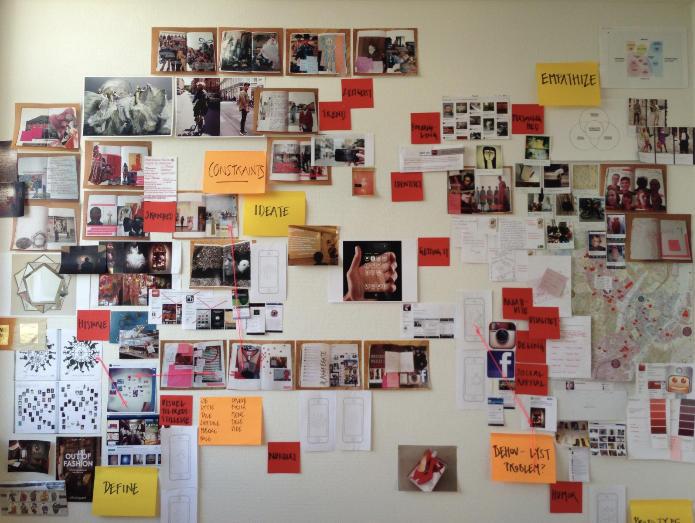
About Project.
This was an internal 2.5 month company project to rethink and redefine how the Design Research team works. While the field is often thought of as intuition and talent driven, the project aimed to discover common points of frustration as well as delight that researchers face in their work and new practices that could be developed to tackle them.
My Role
Given the outside-in nature of this project, I worked individually as a Design Researcher reporting directly to the CEO to stave off biases that the team leads or organisations may have in the project.
Research Methodology
Respondent Profiles
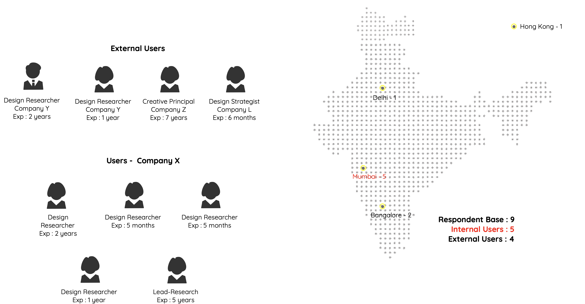
.....
Data Gathering Methods
Being part of the research team gave me a unique vantage point for ethnographic immersion. It allowed participants to open up and provide me with insights into the rhythms and unsaid norms of the workplace.
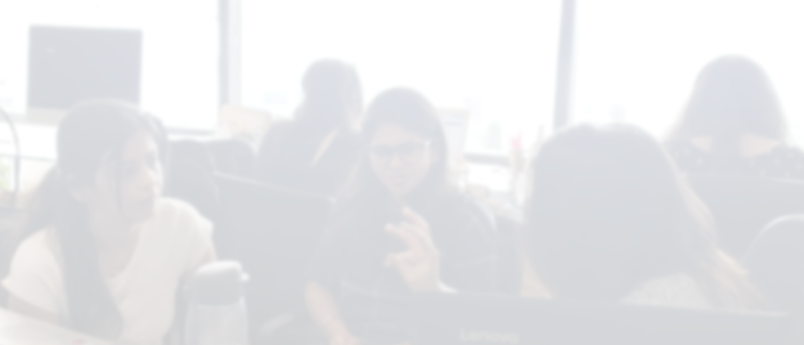
Immersion
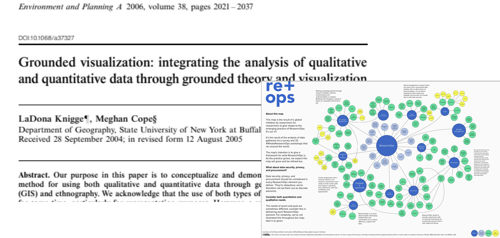
Secondary Research
Interviews

Card Sort
Approach
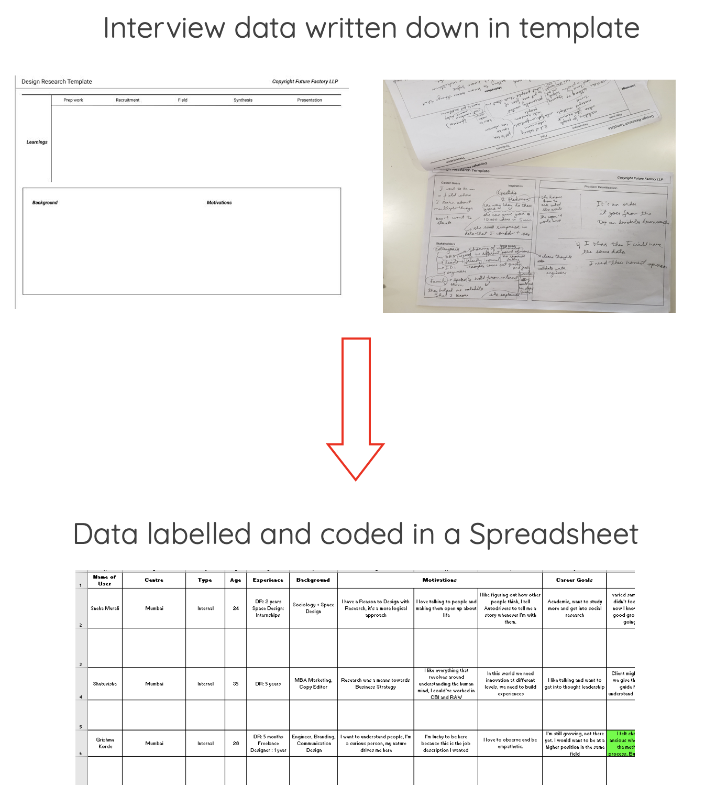
Templates are special data capturing sheets that the research team uses to transcribe the interviews.
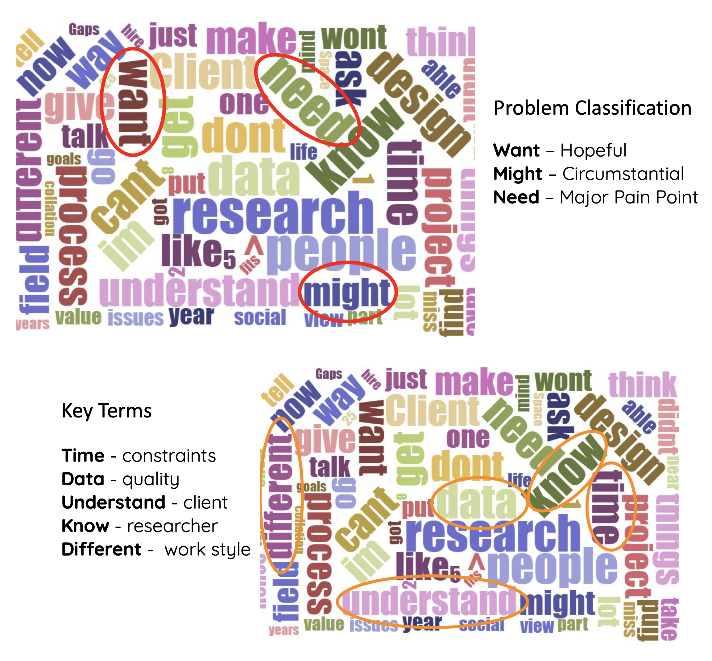
Word clouds of the data helped in uncovering emergent patterns and terms. They also pointed to a tacit classification of problems that researchers had in their heads.
Personas & Journey
The Strategist Lead
MBA Finance, XLRI Jamshedpur
Worked in Market Research
8 years of experience
“I want to apply the practice of analysis and deconstructions to business strategy. Not in a top down way but a bottom up way."
The Purist Researcher
MDes New Media Design, NID
Worked in various design firms
3 years of experience
“I want to get really good at deconstructions and analysis, may it be any social situation or conversation, there are so many layers of meaning waiting to be discovered."
| Work Goals | Purpose of Design Research | Opinion on Empathy | Participants Say vs Do gap | Essential for Success | Research Tool Behaviour | Working Style | Personal KPI | |
|---|---|---|---|---|---|---|---|---|
| Purist | Exploring | informed way to design | deep ethnography needed to achieve it | check for small cues in body language and speece | Understanding of context & fundamentals | make my own tools | Alone | Quality |
| Strategy | Timeboxing | means to sound business strategy | empathise, not sympathise. need to be objective | ask for examples in-situ | Clear Objectives in Research | choose the tool the project demands | Guide | Time, Quality, Resources |
Purist Journey
Journey Maps usually showcase two emotional contrasts - happy and sad.
I tried to construct a journey map like that, however the problems seemed way more nuanced to be all clubbed into a single sad emotion.
Hence, I decided to use the word cloud problem classification to better illustrate the participant's issues in the map.

Pain Points
Losing Data Quality due to different working styles
"I try to write in CAPS and put emojis to capture behavioral cues but it doesn't show up in the coding."
--Leads Interfering or Misguiding the team
"Leads assume they know better but they can't feel the participant emotions I felt on field. I often give up on arguing for the user if I can't convince them"
--Time wasted in Documentation
“I want to reduce the donkey work we have to do. That's why we try to have one coherent process but it never works."
--Time pressure due to bad project planning
“Clients don't understand the difference between quant and qual, they want us to do 50 interviews in 2 days."
--
Pain Points
Maintaining Data & Documents across the project.
"Researchers can use any method audio, writing, memory as long as they put down data on the paper."
--Back & Forth with client in getting clear Objectives
"Initial client brief is messy(broad) they give you their own pain points & facts. Sometimes we get structured information but it's their perspective, we have to unstructure it because we can't rely on their perspective."
--Hard to work with varied set of Researchers
“Young researchers need a lot of inputs. Some can't talk and write at the same time, some have biases, some don't know how to do templating"
--Probes
After the first phase of the project, the senior management held a review session wherein they identified certain focus areas that they found surprising and wanted me to explore further.
Time pressure due to mismatched understanding
Purist Painpoint
Time spent in mundane tasks like documentation
Purist Painpoint
How is time allocated across a project & What contributes to time constraints?
To get deeper into the issue of time loss, participants were given a time sheet to note down how the intitial time distribution takes place the project vis-a-vis how it pans out in a live project.


The collation & analysis phase seemed to take up the more time than allocated, reducing the time available for the crucial presentation making stage; hampering the quality of the project.
-- 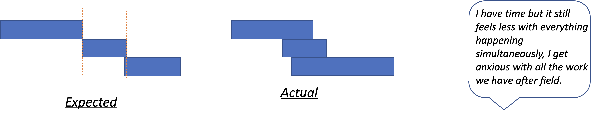While the project is planned to run in distinct phases, the work often spillsover and phases start running in parellel. This inevitably increases pressure on the team and reduced the time needed for reviewing the work done.
-- 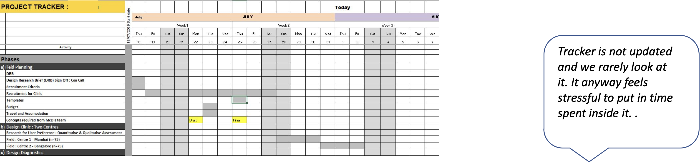The team uses a tracker sheet for guiding time usage in a project. Unfortunately, the tool has become retrospective rather than guiding and entries are often falsified to hide the delays.
--Losing data quality due to differing work styles
Purist Painpoint
Maintaining Data & documentation across the project
Strategist Painpoint
How is data captured in each stage of Research & What leads to data losses?
For data loss, participants were asked to fill up the following information for each stage of the project - What data/document was created? How was it stored? How was it transferred to the next stage? What lead to losses?

The Research Team uses a method of data capture called templating, wherein certain themes(headers) are decided beforehand and interview questions are asked in a semi-structured way to get data pertaining to those themes.
The issue arises when the data captured does not fit neatly into the themes, this is a special problem in design research as the unique data might be more valuable for insighting however it is hard to capture as is.
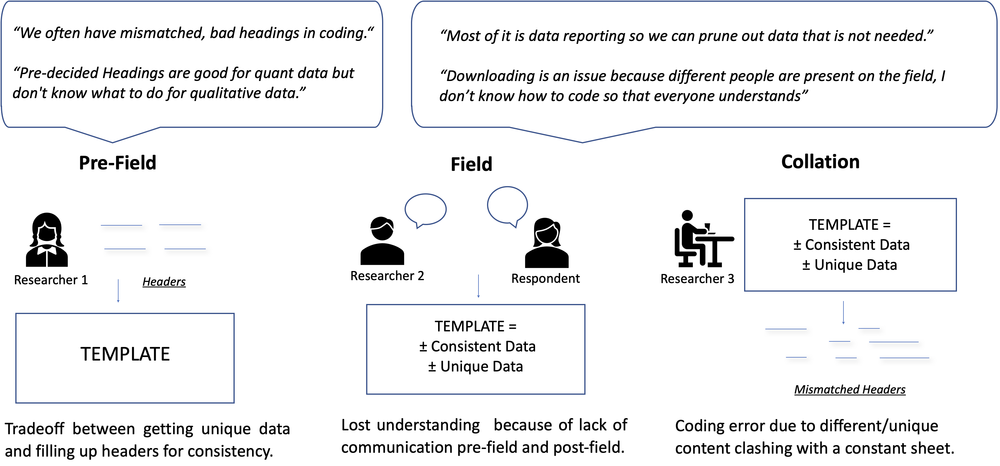To maximise efficiency, the data from the analog sheets is coded on the computer by a second(often junior) researcher who is not present on the field. This leads confusion as the researcher does not know what transpired during the interview, and the unique data gets lost in this way.
Hard to work with varied set of Researchers
Strategist Painpoint
Leads Interfering/misguiding.
Purist Painpoint
How does Collaboration occur & What are the points of failure?
What causes Bias On, Off field & What are the consequences of the bias?
Taking an emic perspective we see that the two groups(business leads & researchers) point to different reasons for the breakdown of collaboration. However from an etic view, both are looking for similar ideals of greater clarity and greater transparency in the project.
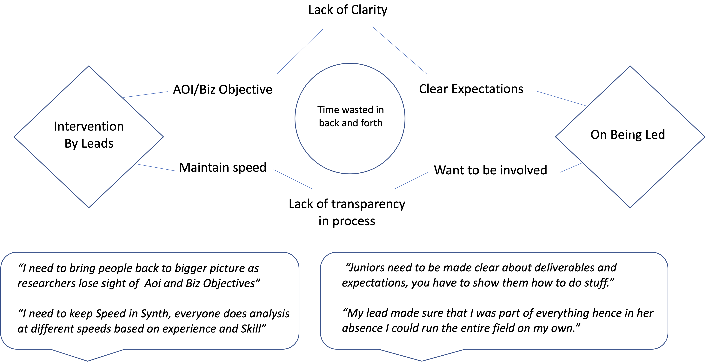 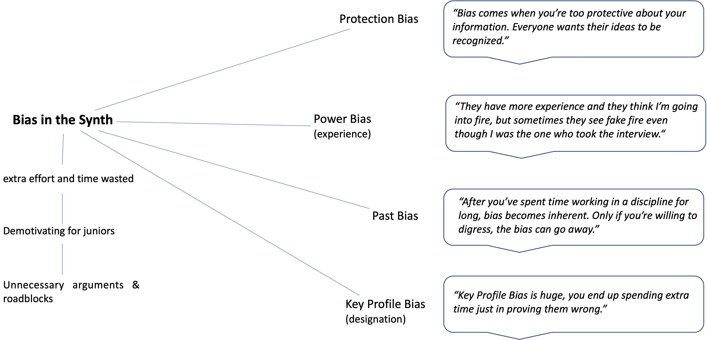Recommendations
Data & Bias
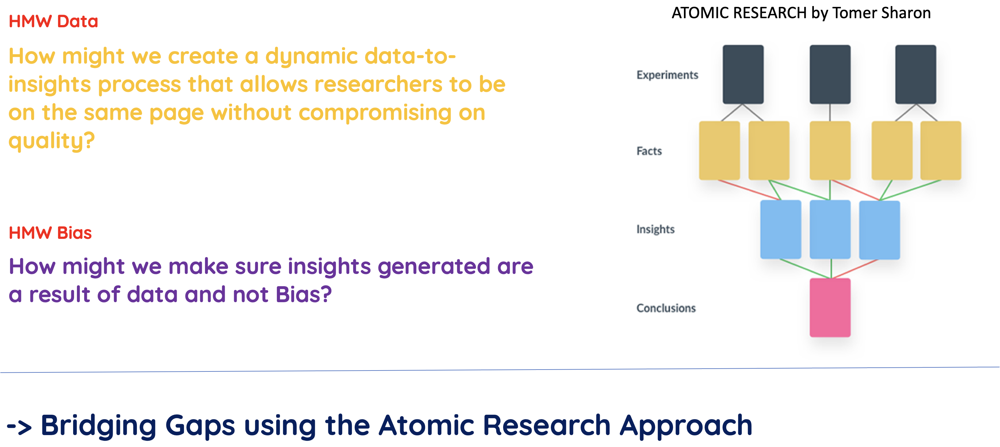 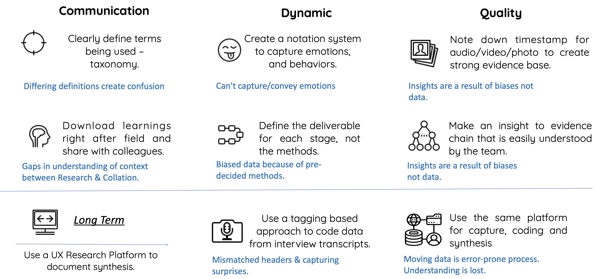Time & Collab
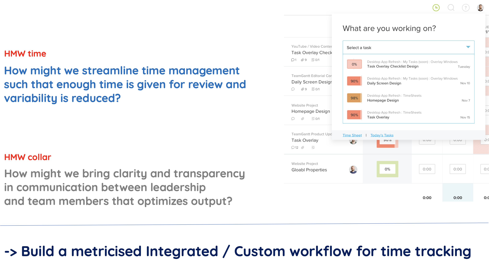 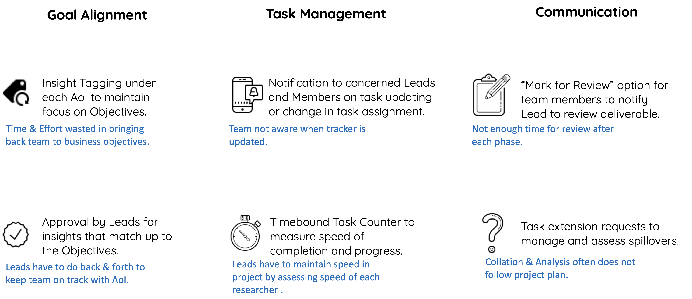Results
The end of the project marked the beginning of the COVID-19 pandemic, offices had to be shut and researched moved online. This shift expedited the process of adopting a UX research platform however the reccommendations could not be tested in full due to the disruptions.
As part of the project I had conducted an extensive analysis of online platforms that could implement the reccommendations mentioned in this project.

The research team has now succesfully replaced a manual error-prone management process with two intelligent platforms from the above list. I'm happy that the research was robust enough to not only resolve current issues but also help teams work with each other in these uncertain times.